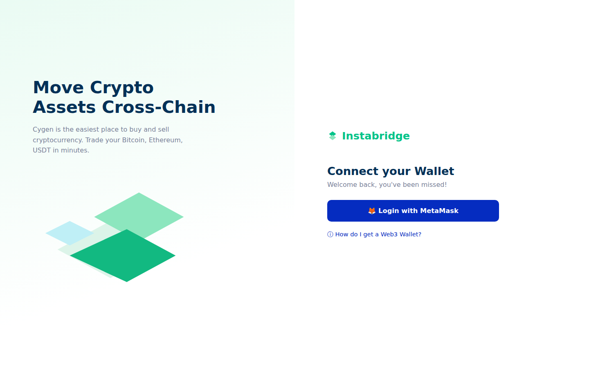
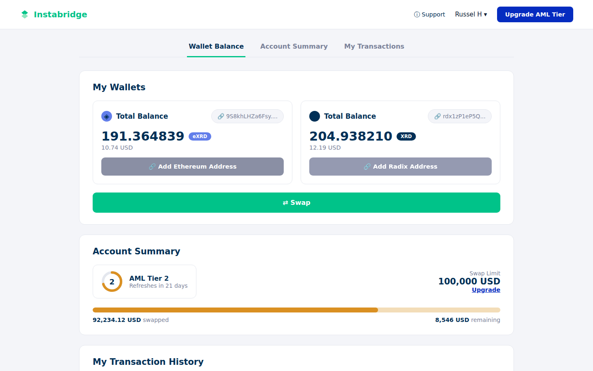
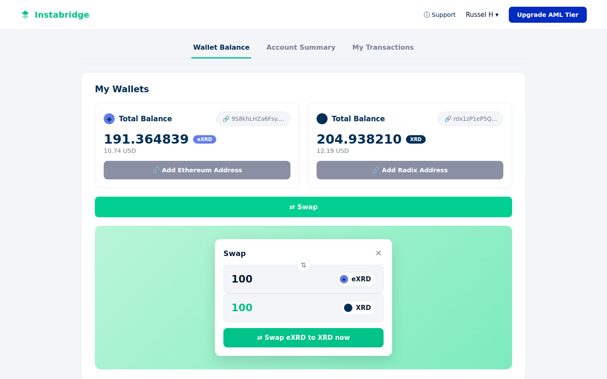
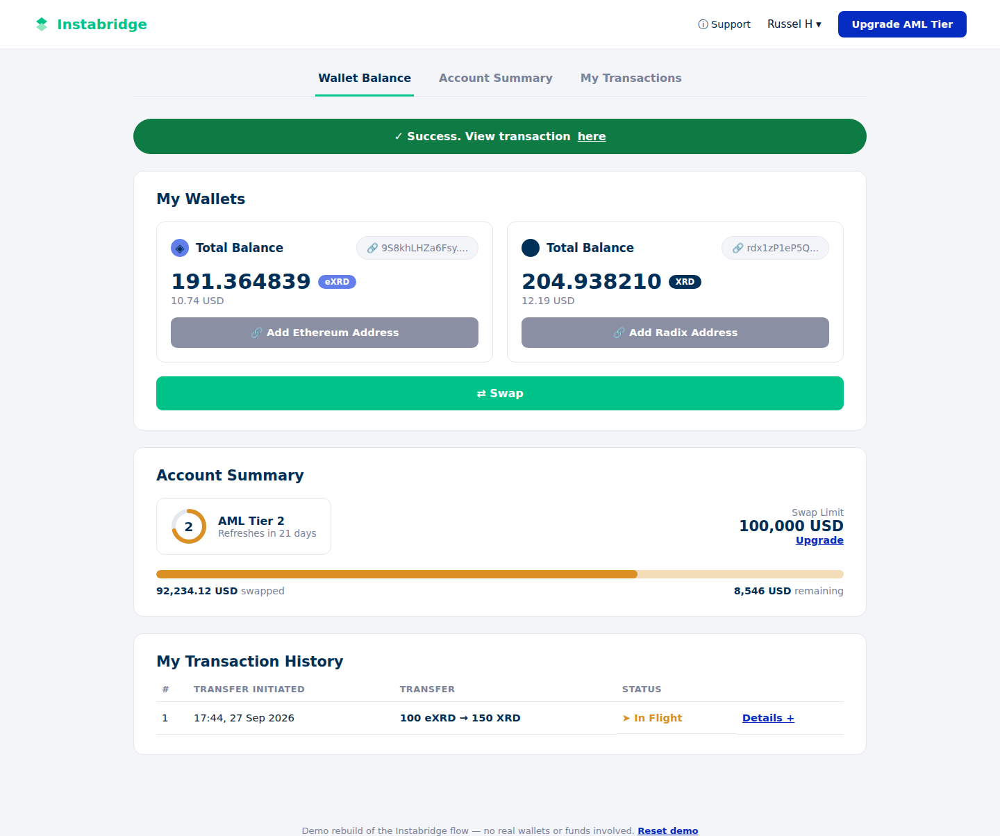

Instabridge
A cross-chain swap platform for moving assets between Ethereum and Radix, designed so that custody, cost, and compliance limits are legible at every step of an irreversible transaction.
The flow architecture, the AML tier model, the bridge step tracker, and the token system are my own design decisions, delivered as the approved Babylon flow. The clickable prototype shown here and this write up were assembled with AI assisted tooling from that approved design source.

The problem is trust, not the form
Moving value between two independent ledgers is not a UI exercise. The user hands funds to a bridge, waits through a settlement process they cannot observe, and has no way to confirm anything is happening until it either completes or does not. Ethereum and Radix have different finality behaviour, different wallet software, and no shared source of truth. Nothing in the interface can be inherited from either chain.
Three frictions defined the work.
-
i
Two wallets, two address formats, two balances, and one mental model that has to hold them together.
-
ii
An opaque middle state. Bridging takes long enough that users close the window, and closing the window is the behaviour that generates support load.
-
iii
AML tier limits that, left in the backend, only reveal themselves as a rejection at the moment of submission.
Reframing a swap screen as an ownership problem
The brief arrived as a request for a swap interface. I reframed it around a single test: at any point in the flow, can the user answer three questions without contacting support?
Where is my money right now? Who controls it? What happens if this fails?
That reframe changed the product requirement. Not a better swap form, but a continuous account of custody across two chains. Every screen that followed was judged against whether it improved or degraded that account.

Compliance as interface, not as blocker
AML tiers were scoped as a backend rule that would throw an error when breached. I moved them onto the dashboard as a permanent object: current tier, monthly limit consumed against limit remaining, and a direct path to raise it.
The reasoning is straightforward. A limit the user can see is a planning input. A limit the user discovers at submission is a failure state, and failure states in a financial product are expensive twice over, once in abandoned transactions and again in support contact.
The same principle governs the swap panel. Exchange rate, network fee, bridge fee, and remaining monthly limit are all disclosed in the panel before the user commits, rather than summarised after the fact on a confirmation screen. Tier state is carried in the colour system as status, not decoration, so the four tiers are distinguishable by lightness as well as hue.

Making the bridge legible
Processing is the riskiest screen in the product, because it is the one where users close the window. A single spinner communicates nothing about whether a cross-chain settlement is progressing or stalled, so users resolve that ambiguity themselves, usually by refreshing or by filing a ticket.
I replaced it with an explicit three step tracker mapped to real system events. Each step carries its own state, and the transaction hash is exposed from the moment it exists, so a worried user has something verifiable to check on a block explorer instead of a support queue to join.
The user's own action, acknowledged back to them.
The opaque middle, named and given a visible active state.
The outcome the user actually cares about, stated as pending until it is true.

The system underneath
Six screens carry the journey: Login, Dashboard, Swap, Processing, Success, and Transaction Details. Underneath them sits a token set and a component inventory sized for handoff rather than for the mockup.
Colour
Brand blue, green, and pink families, a six step grey ramp, and four AML tier colours that carry status. Success, in flight, and tier states each hold their own pill treatment.
Type
IBM Plex Sans across display, header, body, action, and caption scales, set with tabular figures so balances and limits align in columns.
Components
TopNav, Button, StatusPill, TokenSelector, AccountCard, ProgressBar, DataRow, StepTracker, Card. Nine primitives cover every screen in the flow.
Handoff as the deliverable
The output was not a Figma link. It was a written build specification carrying the full token tables, per screen layout rules, and the component inventory, paired with a working prototype of the flow in plain HTML, CSS, and JavaScript.
That pairing does two jobs. Stakeholders can walk the real flow before a build is committed, and engineering can rebuild it in React, Vue, or plain markup without making a single design decision on the way. Deprecated iterations were marked as such in the source file rather than deleted, so the reasoning behind the approved flow stays available to the team that inherits it.
Compliance is not a constraint on the experience. In a regulated product, it is the experience.